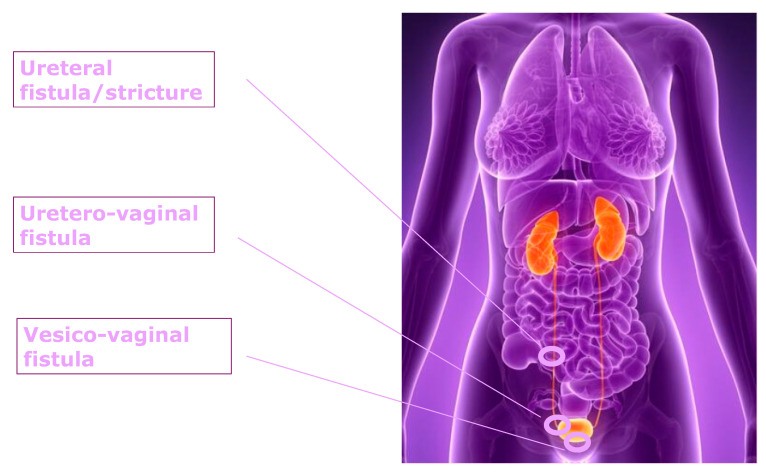
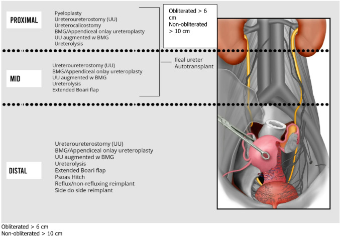
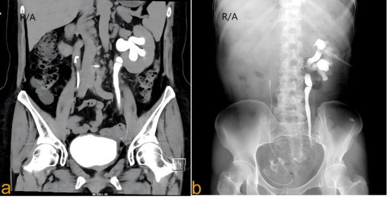
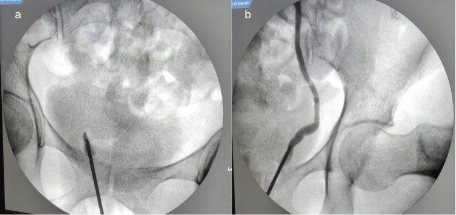

1666 — Hẹp niệu quản sau vá rò và sau xạ trị / Ureteral stricture after fistula repair and after pelvic radiotherapy
Tags: pattern:hep-nieu-quan pattern:u-nuoc pattern:u-nieu-quan pattern:ro-nieu-sinh-duc pattern:xo-hoa-sau-xa vung:nieu-quan vung:than vung:tieu-khung protocol:CTU protocol:MRU protocol:chup-nguoc-dong protocol:do-ap-luc-Whitaker protocol:MAG3 score:Clavien-Dindo incidentaloma:u-nuoc-thai-ky
Mức chắc chắn (certainty): tổng hợp y văn (literature synthesis) — ghép 1 tổng quan cơ chế hẹp niệu quản do xạ (Ther Adv Urol 2026, PMC13133489, CC BY-NC 4.0), 1 thuật toán tái tạo niệu quản robot (World J Urol 2026, PMC12812089, CC BY 4.0), 1 đoàn hệ 53 ca RIUS (Cancers 2024, PMC11545663, CC BY 4.0), 1 tổng quan tổn thương niệu quản trong mổ phụ khoa (Healthcare 2025, PMC12346312, CC BY 4.0), 1 ca rò niệu quản–âm đạo ẩn trong vá rò bàng quang–âm đạo (Cureus 2025, PMC12449848, CC BY 4.0) và 1 ca thay niệu quản bằng tĩnh mạch buồng trứng (BMC Surg 2025, PMC12512800, CC BY-NC-ND 4.0). Không có thử nghiệm ngẫu nhiên nào về ngưỡng can thiệp trong RIUS → phần "khi nào mổ" là tổng hợp thực hành.
Câu chốt: hẹp niệu quản sau vá rò và sau xạ không phải một ống bị bóp mà là một đoạn thành mạch–niệu quản đã chết về mặt vi mạch: xạ và/hoặc mổ gây thiếu máu cục bộ → xơ hóa → co kéo, nên nong bóng và đặt stent chỉ chữa được triệu chứng, còn tái hẹp sau nong do xạ lên tới 100% (5/5 ca) và 15% tái hẹp trong 6 tháng kể cả sau mổ tái tạo ở trung tâm chuyên khoa. Điều quyết định kế hoạch không phải mức ứ nước mà là 3 biến số: chiều dài hẹp (≤ 2 cm hay > 2 cm), vị trí (sát bàng quang hay cao), và nền mô đã xạ hay chưa.
1. Tổng quan bệnh học – cơ chế hình ảnh
1.1 Hai cơ chế, một hình ảnh: sợi xơ thay cho cơ trơn
- Nhánh do xạ (radiation-induced ureteral stricture, RIUS): tia xạ làm tổn thương vi mạch quanh niệu quản → ROS (gốc tự do) + viêm mạn → đại thực bào M2 tiết TGF-β và PDGF → nguyên bào sợi thành nguyên bào cơ → lắng đọng collagen ở lớp ngoài (adventitia) → thành niệu quản cứng, mất nhu động, hẹp lòng cố định, kèm dính vào tổ chức xung quanh (PMC13133489). Đây là vòng xoắn tự duy trì: thiếu máu → xơ → thiếu máu thêm, nên tổn thương vẫn tiến triển sau khi đã ngừng xạ.
- Nhánh do mổ/vá rò (iatrogenic): khâu xiết, nhiệt điện, bóc tách làm mất mạch nuôi hoặc tụ máu–xơ hóa quanh niệu quản sau mổ phụ khoa/vá rò → cùng đích cuối là đoạn niệu quản thiếu máu bị xơ thay thế. Tổn thương niệu quản trong mổ phụ khoa chiếm > 50% mọi tổn thương niệu quản do thầy thuốc; tỉ lệ 0,08% ở mổ lành tính và 0,39–1,1% ở mổ ung thư (PMC12346312). Ngay cả khi soi bàng quang kiểm tra trong mổ, 0,27% vẫn có tổn thương phát hiện muộn.
- TẠI SAO hình ảnh trông như vậy (vật lý + mô bệnh): sợi collagen nghèo proton tự do → T2 tín hiệu thấp, không ngấm thuốc, không có khối trong lòng; trên CT là thành dày, đậm độ mô mềm, không vôi hóa, không có thành phần đặc bắt thuốc. Vì không có khối, không có "bờ tổn thương" để đo — thứ duy nhất thấy được là sự chuyển tiếp đột ngột từ niệu quản giãn sang đoạn hẹp và mô xơ quanh niệu quản.
- Vì sao ứ nước không tương xứng với triệu chứng: hẹp tiến triển nhiều tháng–nhiều năm, thận bù trừ nên bệnh nhân thường không đau; tổn thương chỉ lộ ra khi eGFR giảm hoặc nhiễm trùng tiết niệu tái diễn. Trong loạt 53 ca RIUS, thời gian từ xạ đến chẩn đoán trung vị chỉ 6 tháng (IQR 4–10) nhưng y văn ghi tiềm tàng tới 20 năm (PMC11545663) — nghĩa là không có mốc thời gian nào an toàn để loại trừ.
1.2 Ngưỡng định lượng nằm lòng
| Đại lượng | Số liệu | Nguồn |
|---|---|---|
| Tỉ lệ RIUS chung sau xạ tiểu khung | 0,4–2,7% | PMC11545663 |
| RIUS sau brachytherapy ung thư cổ tử cung | tích lũy 1,9% (3 năm), 2,7% (5 năm) | PMC12512800 |
| RIUS sau xạ trị ung thư cổ tử cung (n = 1.860) | 2,1% | PMC12512800 (dẫn Fokdal) |
| Thời gian tiềm tàng | trung vị 6 tháng (IQR 4–10); y văn tới 20 năm | PMC11545663 |
| Phân bố chiều dài hẹp | 64% ≤ 2 cm; 36% > 2 cm | PMC11545663 |
| Vị trí hẹp (RIUS) | 1/3 trên 36%, 1/3 giữa 39%, 1/3 dưới 25% | PMC11545663 |
| Hai bên | 78% (14/18) trong loạt phẫu thuật RIUS | PMC13133489 (dẫn Toia) |
| Yếu tố dự báo tái hẹp | hẹp > 2 cm OR 6,4 (1,1–36,9); hóa trị đồng thời OR 7,8 (1,3–49,0) | PMC11545663 |
| Nong bóng ở hẹp lành tính có mạch nuôi tốt, < 2 cm | không tái phát 89% ở 2 năm | PMC13133489 (dẫn Richter, n = 114) |
| Nong bóng ở hẹp thiếu máu | không tái phát chỉ 40% | PMC13133489 |
| Nong bóng ở RIUS | tái phát 100% (5/5) | PMC13133489 (dẫn Yam) |
| Đặt stent: hẹp nội tại vs chèn ép ngoài | thành công 94% vs 73% | PMC13133489 (dẫn Yossepowitch) |
| Nhịp thay stent ở RIUS | 1–2 tháng/lần (stent polymer thường 3–6 tháng, kim loại tới 12 tháng) | PMC13133489 |
| Tổn thương niệu quản trong mổ phụ khoa | 0,08% mổ lành tính; 0,39–1,1% mổ ung thư; 0,27% phát hiện muộn dù đã soi bàng quang | PMC12346312 |
| Rò niệu quản–âm đạo (UVF) đi kèm rò bàng quang–âm đạo (VVF) | ~10% | PMC12449848 |
2. Mẫu hình + chẩn đoán phân biệt theo vị trí (gamut)

Sơ đồ ba tổn thương hay gặp sau mổ phụ khoa: hẹp/rò niệu quản, rò niệu quản–âm đạo, rò bàng quang–âm đạo. Nguồn: Healthcare (Basel) 2025, PMC12346312, CC BY 4.0 — nguyên bản.- Mẫu hình chốt: giãn niệu quản–thận trên + một điểm chuyển tiếp hẹp, nhẵn, không có khối trong lòng, không có sỏi cản quang. Trên CTU thì muộn, đoạn trên đầy cản quang và giãn, đoạn dưới mảnh như sợi chỉ; trên MRU đoạn hẹp mất tín hiệu dịch giữa hai đoạn có dịch.
- Gamut theo vị trí (quyết định kỹ thuật tái tạo, không chỉ chẩn đoán):
- Sát khúc nối bể thận – niệu quản (UPJ) / 1/3 trên: hẹp do xạ thể cao (thường gặp khi xạ mở rộng), hẹp sau mổ đại tràng–trực tràng, xơ sau phúc mạc, lạc nội mạc tử cung, di căn hạch. Kỹ thuật: tạo hình bể thận–niệu quản, niệu quản–niệu quản tận–tận, ghép niêm mạc má, niệu quản–đài thận.
- 1/3 giữa: hẹp do xạ (thường dài, nhiều đoạn), hẹp sau cắt tử cung, thoát vị niệu quản vào ổ xơ. Kỹ thuật: tận–tận, ghép niêm mạc má, niệu quản ghép ruột non.
- 1/3 dưới (sát bàng quang, < 5 cm): hẹp sau vá rò, sau mổ sa sinh dục, sau đặt lưới, hẹp do xạ đoạn chậu. Kỹ thuật: cắm lại niệu quản vào bàng quang (ureteroneocystostomy) ± psoas hitch ± Boari flap; tránh Boari trên bàng quang đã xạ.
- Gamut theo "nền mô" (quan trọng hơn gamut theo vị trí): niệu quản "sạch" (sỏi, hẹp lành tính) → nong bóng/khâu nối dễ lành; niệu quản đã xạ hoặc đã mổ nhiều lần → mọi can thiệp đều lành kém, tái hẹp cao, phải cắt hết đoạn xơ và không tạo căng.
- Ba câu hỏi trước khi đọc phim: (1) hẹp dài bao nhiêu cm? (2) cách lỗ niệu quản bao xa? (3) nền mô đã xạ/nhiều lần mổ chưa? — trả lời được 3 câu này là đã chọn xong chiến lược.
3. Bảng so sánh phân biệt (ma trận đối chiếu)
| Thực thể (entity) | Hình ảnh điển hình | Chốt vào (rule-in) | Chốt loại (rule-out) | Gợi ý xác nhận |
|---|---|---|---|---|
| Hẹp do xạ (RIUS) | Đoạn hẹp dài, nhẵn, đều, thành dày không vôi, mô xơ quanh niệu quản, thường hai bên | Tiền sử xạ tiểu khung + hẹp dài/nhiều đoạn + không khối trong lòng | Có khối bắt thuốc trong lòng → không phải hẹp xơ đơn thuần | CTU 3 thì + MRU; soi niệu quản thấy lòng hẹp đều, niêm mạc nhợt |
| Hẹp sau vá rò / sau mổ phụ khoa | Hẹp khu trú, ngắn đúng vị trí mổ; có thể kèm rò niệu quản–âm đạo, ứ nước một bên | Mổ trong 6 tuần trước + hẹp đúng tầng mổ + đái rỉ liên tục | Hẹp lan tỏa hai bên, không liên quan vị trí mổ → nghĩ xạ/hẹp lành tính khác | Chụp ngược dòng thì mổ; CT bàng quang có cản quang; soi bàng quang tìm lỗ rò |
| Hẹp do sỏi | Sỏi cản quang tại điểm hẹp, dấu đuôi sao chổi, niêm mạc phù nề | Sỏi thấy trên CT không cản quang | Hẹp nhẵn, không sỏi, không cản quang trong lòng | CT không cản quang là chuẩn; siêu âm + X-quang bụng |
| Xơ sau phúc mạc / lạc nội mạc | Hẹp kéo dài, nhiều mức, đẩy niệu quản vào trong; khối mô mềm bao quanh chứ không trong lòng | Hẹp nhiều đoạn + mô mềm quanh niệu quản + không khối trong lòng | Tổn thương trong lòng/loét niêm mạc → nghĩ ung thư | MRI có/không cản từ; sinh thiết khi nghi ác tính |
| Ung thư biểu mô niệu quản | Khối trong lòng, bờ không đều, ngấm thuốc thì vỏ–niệu quản, có thể di căn hạch | Khối đặc trong lòng + ngấm thuốc + tế bào niệu | Thành dày đều, không khối, không ngấm → nghĩ xơ | Niệu soi + tế bào học; CTU thì bài tiết |
| Giãn sinh lý thai kỳ (bẫy) | Giãn phải > trái, tới bể thận, không có điểm chuyển tiếp, hết sau sinh | Thai kỳ + không điểm hẹp + giãn hai bên không đối xứng | Có điểm chuyển tiếp + đoạn dưới xẹp → hẹp thật | Siêu âm sau sinh 6–12 tuần; chỉ chụp thêm khi có biến chứng |
- Ảnh minh họa mẫu hình: CTU thì bài tiết cho thấy niệu quản trên giãn, đoạn chậu hẹp; chụp ngược dòng xác nhận đoạn hẹp và không có sỏi/khối.
4. Protocol chụp + hệ phân độ/điểm chuẩn hóa
4.1 Chọn kỹ thuật theo câu hỏi lâm sàng
- CTU (CT urography) 3 thì — chuẩn để đo chiều dài hẹp và loại trừ sỏi/khối: thì không cản quang (sỏi, vôi hóa), thì vỏ thận 90–100 giây (đánh giá nhu mô, mạch), thì bài tiết 8–10 phút (hình dạng lòng niệu quản). Kỹ thuật split-bolus giảm số lần chụp nhưng vẫn đủ 3 thông tin.
- MRU (MR urography) không cản từ — khi suy thận, dị ứng cản quang, thai phụ, trẻ: chuỗi T2 nặng (SSFSE/HASTE) cho hình ảnh lòng niệu quản bằng dịch, không cần thuốc, đánh giá được mô xơ quanh niệu quản. Đây cũng là lựa chọn khi cản quang bị chống chỉ định và khi cần phân biệt xơ quanh niệu quản với khối.
- Chụp ngược dòng (retrograde pyelography) — khi CTU/MRU không kết luận hoặc cần đo chính xác đoạn hẹp ngay trước mổ; đồng thời phát hiện rò niệu quản–âm đạo ẩn (bơm thuốc thấy tràn sang âm đạo). Trong ca VVF, chụp ngược dòng trong mổ là bước phát hiện UVF mà CT trước mổ bỏ sót (PMC12449848).
- Đo áp lực Whitaker — chỉ dùng khi hình ảnh mơ hồ mà nghi tắc thật: truyền dịch vào bể thận và đo chênh áp; chênh áp thấp = không tắc (loại trừ hẹp có ý nghĩa).
- MAG3 + lợi niệu — đánh giá chức năng từng thận và mức tắc trước khi quyết định giữ thận hay không.
4.2 Bảng ngưỡng kỹ thuật tái tạo (tra nhanh khi hội chẩn)
| Kỹ thuật | Giới hạn chiều dài / điều kiện | Kết quả báo cáo |
|---|---|---|
| Nong bóng / cắt xơ nội soi | < 2 cm, không thiếu máu, không xạ | nong đơn thuần 15–44% thành công; cắt xơ 75% ở 6 tháng; kết hợp ở hẹp > 2 cm: 77,2% (1 năm)/66,6% (2 năm) |
| Niệu quản–niệu quản tận–tận | < 2 cm**, cách lỗ niệu quản **> 2 cm | 65–100% |
| Cắm lại niệu quản vào bàng quang | hẹp < 5 cm tính từ lỗ niệu quản | 85–100%; bí tiểu cấp 8% |
| Psoas hitch | thiếu chiều dài sau khi cắm lại | cộng thêm 6 cm (tới 10 cm) |
| Boari flap | hẹp 8–15 cm | 90%; tránh trên bàng quang đã xạ |
| Ghép niêm mạc má | không tắc hoàn toàn ≤ 10 cm; tắc hoàn toàn ≤ 6 cm | 90–100%; biến chứng nơi lấy 4%, graft co 8–9% |
| Niệu quản ghép ruột non | hẹp dài/nhiều đoạn, thất bại các cách khác | chiều dài hẹp trung bình 20 cm; biến chứng sớm 8%, muộn 14%; toan chuyển hóa 4% |
| Ghép ruột thừa (onlay) | hẹp bên phải | ruột thừa dài trung bình 8 cm; 10–20% bệnh nhân không có ruột thừa |
| Ghép tĩnh mạch buồng trứng | hẹp dài sau xạ, bệnh nhân sau mãn kinh/cắt buồng trứng | đường kính tĩnh mạch 3–4 mm, tương đương niệu quản |
- Hai nguyên tắc làm thay đổi tỉ lệ tái hẹp: (1) "nghỉ niệu quản" (ureteral rest) 1–6 tuần trước mổ — hai loạt lớn giảm tái hẹp 13,4% → 4,6% và 22,5% → 9,3%; (2) hoãn tái tạo tới 1 năm sau liều xạ cuối để mô hồi phục (PMC12812089).
- Kết cục thực tế của RIUS: nong/cắt xơ được thử ở 72%, thành công 74% lúc rút stent nhưng chỉ 59% ở 12 tháng; 47% phải mổ tái tạo; 15% tái hẹp (trung vị 5 tháng); eGFR cải thiện có ý nghĩa ở 12 tháng (67,7 → 77,0 mL/phút, p = 0,007) (PMC11545663).
4.3 Sơ đồ quyết định
flowchart TD
A[Hẹp niệu quản + ứ nước] --> B{Đã xạ tiểu khung?}
B -->|Có| C[RIUS: đo chiều dài + vị trí trên CTU/MRU]
B -->|Không| D{Hẹp sau mổ/vá rò < 6 tuần?}
D -->|Có| E[Chụp ngược dòng ± soi bàng quang: loại rò niệu quản–âm đạo]
D -->|Không| F[Loại sỏi, khối, xơ sau phúc mạc]
C --> G{≤ 2 cm và 1/3 trên–giữa?}
G -->|Có| H[Nong bóng hoặc cắt xơ nội soi 1 lần]
G -->|Không| I[Tái tạo: tận–tận / cắm lại / Boari / ghép niêm mạc má / ruột non]
E --> I
F --> I
H --> J{Tái hẹp?}
J -->|Có| I
J -->|Không| K[Theo dõi eGFR + hình ảnh 3–6 tháng]
I --> K
- Kết quả mổ tái tạo (ảnh minh họa lựa chọn theo vị trí): ghép niêm mạc má chỉ dùng khi không tắc hoàn toàn ≤ 10 cm hoặc tắc hoàn toàn ≤ 6 cm; hẹp dài hơn phải dùng ruột non hoặc ghép tĩnh mạch buồng trứng.

Bảng–sơ đồ kỹ thuật theo 1/3 trên – giữa – dưới, kèm giới hạn chiều dài của ghép niêm mạc má (tắc hoàn toàn > 6 cm, không tắc hoàn toàn > 10 cm thì cần ruột non). Nguồn: World J Urol 2026, PMC12812089, CC BY 4.0 — nguyên bản.5. Biến thể bình thường và cạm bẫy
- Giãn sinh lý thai kỳ: phải > trái, do tử cung chèn ép + progesterone giãn cơ trơn; không có điểm chuyển tiếp, không có đoạn dưới xẹp, và hết trong 6–12 tuần sau sinh. Đừng gắn nhãn "hẹp niệu quản" cho thai phụ chỉ vì có ứ nước — nhưng cũng đừng bỏ qua hẹp thật khi có điểm chuyển tiếp.
- Hẹp giả do nhu động: co thắt sinh lý tạo đoạn mảnh ngắn, thay đổi giữa các thì/lần chụp; hẹp thật cố định và có giãn trên. Chụp lại thì muộn hoặc sau lợi niệu là cách phân biệt.
- Sau mổ < 7 ngày: phù nề niệu quản do thủ thuật gây hẹp giả — đừng vội kết luận hẹp xơ; hẹp xơ cần ≥ vài tuần và có xơ hóa quanh niệu quản.
- Xơ do xạ vs tái phát ung thư: xơ không ngấm thuốc, không có khối, không dày hạch; tái phát ung thư có khối ngấm thuốc và/hoặc hạch. PET/CT có thể dương giả sau xạ — không dùng một mình để mổ.
- Cạm bẫy chết người — rò động mạch chậu–niệu quản (uretero-arterial fistula): ở bệnh nhân đã xạ tiểu khung + đặt stent niệu quản nhiều lần, đái máu ồ ạt thoáng qua ("sentinel bleed") rồi tự cầm là dấu hiệu báo trước, không phải viêm xạ; ca đã báo phải thay stent kim loại nhiều lần và cuối cùng chảy máu bàng quang tamponade, Hb 45 g/L (PMC13066737). Nghi ngờ → CTA 2 thì + chụp mạch, không chờ.
- Cạm bẫy "bỏ sót rò niệu quản–âm đạo" khi vá rò bàng quang–âm đạo: rò niệu quản–âm đạo đi kèm ~10%; nếu không phát hiện, bệnh nhân vẫn rỉ nước tiểu sau khi vá thành công và bị mổ lại trong mô sẹo (PMC12449848). Trước mọi ca vá rò: chụp ngược dòng/soi bàng quang là bắt buộc.
- Stent không phải điều trị triệt để: ở RIUS, stent phải thay 1–2 tháng/lần và có thể gây nhiễm màng sinh học, đóng cặn, di trú, rò — chỉ dùng như cầu nối tới mổ hoặc giảm nhẹ ở người không mổ được.
- Đừng đo chiều dài hẹp trên phim 2D nghiêng: chiều dài thật đo trên CTU/MRU nhiều bình diện hoặc thước trong mổ; ước lượng sai làm chọn sai kỹ thuật (ghép má cho hẹp > 10 cm → thất bại).
6. Tự lượng giá — Blind Quiz
Ca 1 — Nữ 58 tuổi, xạ trị ung thư cổ tử cung 3 năm trước, hiện mệt và creatinin tăng nhẹ; không đau bụng.

- Gợi ý: không có cơn đau quặn thận, không sỏi trên phim cũ.
- Câu hỏi: (1) Mô tả vị trí và hình thái đoạn hẹp. (2) Ba chẩn đoán phân biệt. (3) Dấu hiệu nào chốt nguyên nhân do xạ?
Bấm để hiện đáp án (findings + chẩn đoán)
- Findings: (a) CTU coronal — bể thận và 1/3 trên niệu quản trái giãn, thuốc cản quang đọng lại; đoạn chậu hẹp nhẵn, không khối trong lòng, không sỏi cản quang. (b) Chụp ngược dòng/antegrade xác nhận đoạn hẹp khu trú với niệu quản trên giãn.
- Chẩn đoán: hẹp niệu quản do xạ (RIUS) — tiền sử xạ tiểu khung + hẹp nhẵn không khối + không sỏi.
- Phân biệt: hẹp sau mổ/vá rò (không có tiền sử mổ), sỏi niệu quản (không sỏi trên CT không cản quang), ung thư niệu quản (không khối ngấm thuốc trong lòng).
- Vì sao hẹp mà không đau: hẹp tiến triển chậm nhiều tháng, thận bù trừ; triết lý "đau = tắc cấp", còn đây là tắc mạn.
- Bước tiếp theo: đo chiều dài hẹp trên CTU; nếu ≤ 2 cm, 1/3 trên–giữa → nong/cắt xơ một lần; nếu dài hơn hoặc tái hẹp → tái tạo (tận–tận/cắm lại ± Boari), nhớ nghỉ niệu quản 1–6 tuần trước mổ.
- Nguồn ảnh: BMC Surg 2025, PMC12512800, CC BY-NC-ND 4.0 — nguyên bản (2 panel a–b).
Ca 2 — Nữ 36 tuổi, rỉ nước tiểu liên tục 10 ngày sau cắt tử cung toàn phần; siêu âm thấy ứ nước phải; nội soi bàng quang có lỗ rò ở thành sau.

- Câu hỏi: (1) Vì sao niệu quản phải không hiện hình trên hình (a)? (2) Chẩn đoán kép là gì? (3) Nếu chỉ vá rò bàng quang–âm đạo thì hậu quả?
Bấm để hiện đáp án (findings + chẩn đoán)
- Findings: (a) Bơm thuốc ngược dòng bên phải — niệu quản phải không hiện hình, thuốc tràn vào bàng quang/âm đạo; (b) bên trái niệu quản bình thường, thành mạch đều. Kèm ứ nước phải trên CT.
- Chẩn đoán: rò niệu quản–âm đạo (UVF) ẩn phối hợp rò bàng quang–âm đạo (VVF) sau cắt tử cung — UVF đi kèm ~10% ca VVF.
- Vì sao bỏ sót: VVF và UVF cùng gây rỉ nước tiểu liên tục, triệu chứng chồng lấp; CT trước mổ chỉ thấy ứ nước + thoát thuốc từ bàng quang, không thấy đường rò niệu quản.
- Hậu quả nếu chỉ vá VVF: bệnh nhân vẫn rỉ nước tiểu, bị mổ lại trong mô sẹo, nguy cơ hẹp niệu quản tiến triển + mất chức năng thận.
- Xử trí trong ca này: cắm lại niệu quản phải + vá VVF cùng lúc, hết rỉ hoàn toàn.
- Nguồn ảnh: Cureus 2025, PMC12449848, CC BY 4.0 — nguyên bản (2 panel a–b).
Ca 3 — Nam 67 tuổi, hẹp niệu quản 4 cm sau xạ trị ung thư trực tràng; đã nong bóng 1 lần, tái hẹp sau 5 tháng.
- Câu hỏi: (1) Vì sao nong bóng thất bại ở đây? (2) Chọn kỹ thuật nào và vì sao không dùng ghép niêm mạc má? (3) Tỉ lệ tái hẹp kỳ vọng?
Bấm để hiện đáp án
- Vì sao thất bại: hẹp > 2 cm (OR tái hẹp 6,4) + nền đã xạ (mô thiếu máu, xơ) → nong chỉ rách mô xơ rồi lành bằng xơ nhiều hơn. Ở RIUS, nong bóng tái phát 100% (5/5) trong loạt được dẫn; tỉ lệ thành công chung của nội soi ở RIUS chỉ 59% ở 12 tháng.
- Kỹ thuật: hẹp 4 cm, 1/3 giữa, đã xạ → niệu quản ghép ruột non hoặc ghép tĩnh mạch buồng trứng (nếu là nữ sau mãn kinh) / tận–tận có ghép bổ sung. Ghép niêm mạc má chỉ đặt ra khi không tắc hoàn toàn ≤ 10 cm; nếu đoạn hẹp tắc hoàn toàn > 6 cm thì không dùng onlay được.
- Kỳ vọng: tái hẹp chung 15% (trung vị 5 tháng); eGFR có thể cải thiện dù phải can thiệp nhiều lần. Hoãn mổ tới 1 năm sau liều xạ cuối nếu tình trạng cho phép.
Bài liên quan chéo
- 191 – Vá lại rò niệu–sinh dục thất bại
- 152 – Sỏi niệu
- 1665 – Rò trực tràng–âm đạo sau xạ trị và sau mổ
- 1633 – Viêm bàng quang do xạ, chảy máu nặng
- 500 – Tổng quan Vú & Sản phụ khoa
Không dùng để chẩn đoán độc lập khi chưa có người hướng dẫn.